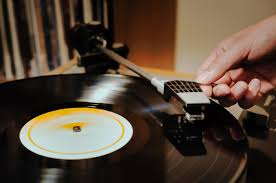
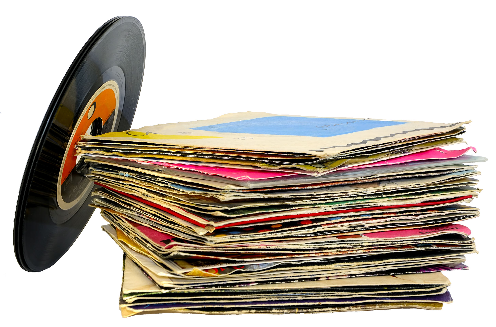

| Anos | Estilos musicais populares | Artistas Principais | Momentos históricos |
|---|---|---|---|
| 60 | Rock 'n' Roll | The Beatles, The Rolling Stones, Bob Dylan, The Doors, The Supremes, Aretha Franklin, Elvis Presley | O festival de Woodstock (1969) foi importante porque uniu vários jjovens através da paz e da música. |
| 70 | Disco Music | ABBA, Stevie Wonder, Elton John, Dolly Parton, Pink Floyd, Fleetwood Mac, David Bowie | O surgimento do clube Studio 54 foi importante porque revolucionou a vida noturna em Nova Iorque |
| 80 | Hip-Hop | Madonna, The Cure, Michael Jackson, Prince, The Police, U2, Whitney Houston | O lançamento da MTV (1981) foi importante porque totnou a música mais visual, através dos videoclipes. |